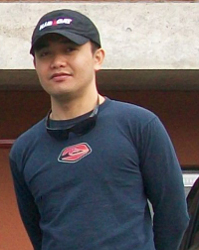

|  |
Patrick C. CABAITAN
Postdoctoral Research Fellow (Alumnus)
|
Academic History
Post-doctoral Research Fellow (March 2013 – Feb 2015)
National University of Singapore – Reef Ecology Laboratory
Enhancing Singapore's Coral Reef Ecosystem: Assessment of Sites for Reef Restoration (supervisor: Prof. Loke-Ming Chou)
Post-doctoral Research Assistant (Jan – Mar 2013)
The Marine Science Institute, University of the Philippines
Decadal trends in reef fish recruitment: influence of different fishing pressures and marine reserves (supervisor: Prof. Porifio Aliño)
Post-doctoral Research Assistant (Oct 2012 – Dec 2013)
De La Salle University, Philippines
Impact of the May 2010 Thermal Stress Event on Coral Reef Communities (supervisors: Profs. Wilfredo Licuanan and Ma. Luisa Enriquez)
Ph.D. Marine Science (2009 – 2012)
University of the Ryukyus, Japan
Differential recovery of coral populations in Motobu, Okinawa: consequence of recruitment and post-settlement processes (supervisor: Prof. Kazuhiko Sakai)
Research Associate (2005 – 2009)
The Marine Science Institute, University of the Philippines
Enhancing recovery by transplantation of corals, GEF-Coral Reef Targeted Research and Capacity Building for Management Program (supervisor: Prof. Edgardo D. Gomez)
M.Sc. Marine Science (2002 – 2007)
The Marine Science Institute, University of the Philippines
The effects of coral transplantation and giant clam restocking on the structure of fish communities on degraded patch reefs (supervisors: Profs. Porifio Aliño and Edgardo D. Gomez)
Research Assistant (2001 – 2005)
The Marine Science Institute, University of the Philippines
Coral Reef Habitat and Productivity Enhancement through Coral Transplantation and Giant Clam Restocking, Pew Fellowship in Marine Conservation (supervisor: Prof. Edgardo D. Gomez)
Undergraduate Research and Laboratory Assistant (1998 – 2001)
Marine Biology Section, University of San Carlos, Philippines (supervisor: Prof. Filipina B. Sotto)
Publications
Cabaitan P, Yap H, Gomez E (under revision) Performance of single versus mixed coral species for transplantation to restore degraded reef areas.
Gomez E, Cabaitan P, Yap H (2013) Can coral cover be restored in the absence of natural recruitment and reef recovery? Restoration Ecology DOI: 10.1111/rec.12041
Cabaitan P, Yamamoto H, Sakai K (2012) Recovery of corals a decade after a thermal stress event at Motobu, Okinawa, Japan: spatial variability in winners and losers. Galaxea, Coral Reef Studies 14: 27-40
Cabaitan P, Yamamoto H, Sakai K (2012) Analyses of coral community survey data at different taxonomic resolutions: implications for reef monitoring. Galaxea, Coral Reef Studies 14: 41-52
Gomez E, Yap H, Cabaitan P, Dizon R (2011) Successful transplantation of a fragmenting coral, Montipora digitata, for reef rehabilitation. Coastal Management 39: 556-574
Cabaitan P, Gomez E, Aliño P (2008) Effects of coral transplantation and giant clam restocking on the structure of fish communities on degraded patch reefs. Journal of Experimental Marine Biology and Ecology 357: 85-98
Vicentuan K, Guest J, Baria M, Cabaitan P, Dizon R, Villanueva R, Aliño P, Edwards A, Gomez E, Heyward A (2008) Multi-species spawning of corals in north-western Philippines. Coral Reefs 27: 83
Cabaitan P, Licuanan W, Gomez E (2007) Comparison between videographic and photographic methods in assessing coral reef benthic communities. Science Diliman 19: 7-13
Gomez E, Cabaitan P, Vicentuan K (2006) Coral culture and transplantation and Restocking of Giant Clams in the Philippines. In: Proceedings of the Regional Technical Consultation on Stock Enhancement for Threatened Species of International Concern, 13-15 July 2005. Iloilo City, Philippines